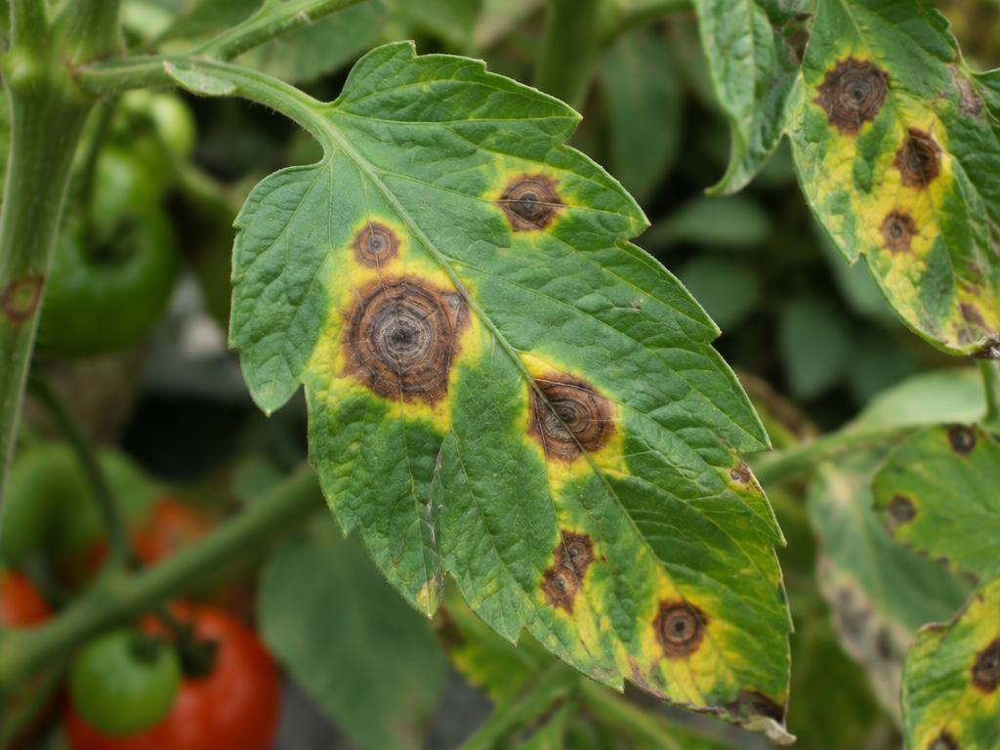
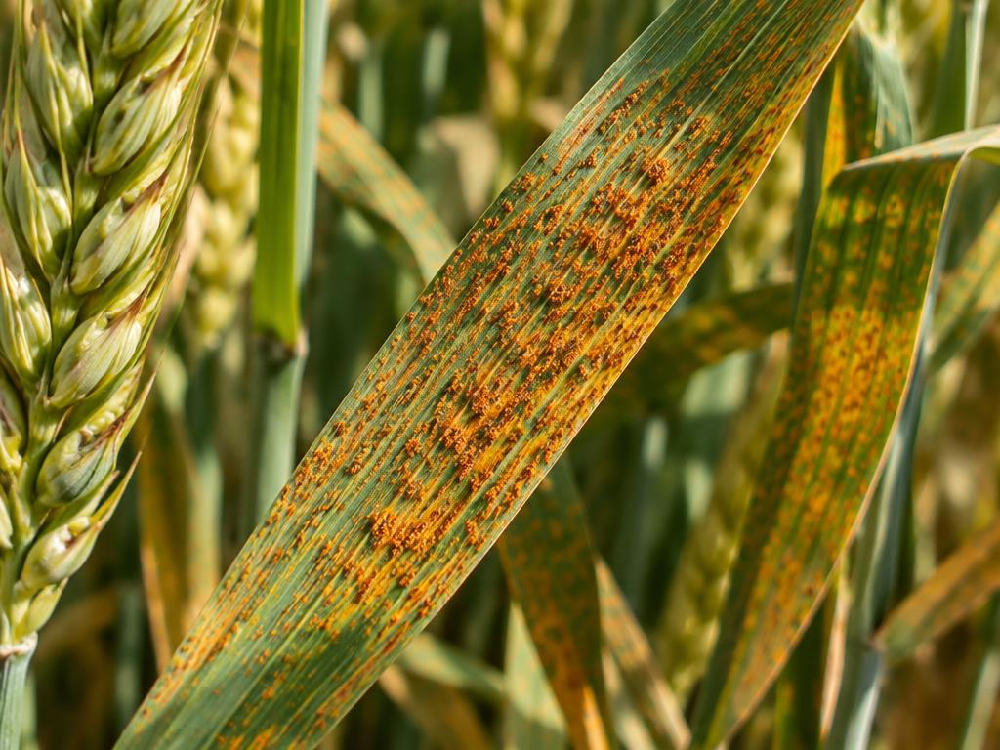
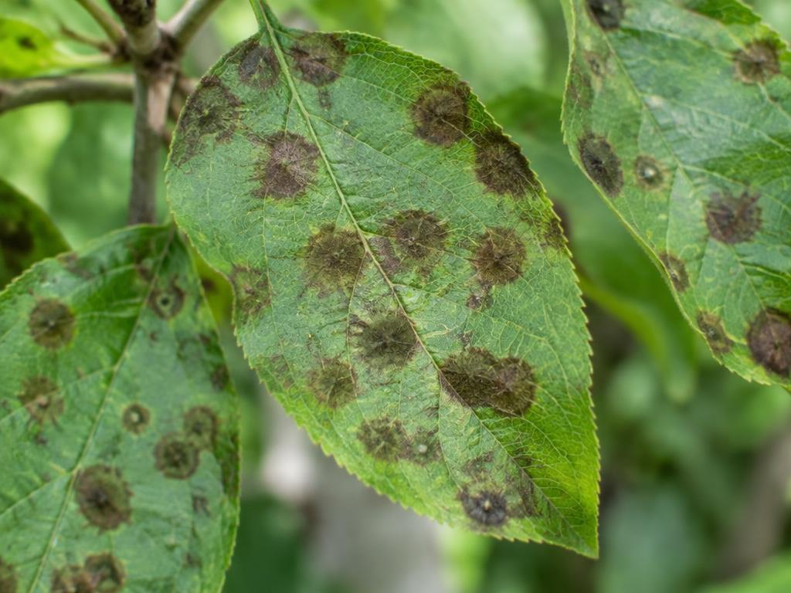

High-precision detection
98.7% accuracy across 400+ known diseases, validated on real field images.
AI-Powered Plant Diagnostics
Upload a photo of any plant and our AI identifies the disease, explains the symptoms, and gives you a clear treatment and prevention plan — so problems never reach your harvest.

Early Blight
Alternaria solani · Tomato
Treatment plan generated
How It Works
No lab, no guesswork. One clear photo is all the AI needs.
Take or upload a clear photo of the affected leaf, stem, or fruit.
A vision model trained on millions of images inspects lesions, spots, and patterns in seconds.
Receive the disease name, its symptoms, and step-by-step treatment and prevention advice.
Key Features
98.7% accuracy across 400+ known diseases, validated on real field images.
Every result includes symptoms, recommended products, and prevention steps — not just a label.
Vegetables, fruit trees, grains, and ornamentals — one model for the whole farm.
Spots infections before they visibly spread, when treatment is cheapest and most effective.
Track plant health over time and export shareable PDF reports for agronomists.
Full interface and results in both languages, with complete right-to-left support.
Analysis Showcase
Sample results generated by the system, exactly as growers receive them.

ModerateAlternaria solani · Tomato
Symptoms
Recommended treatment
Remove and destroy infected leaves, then apply a chlorothalonil or copper fungicide every 7–10 days. Water at the base, mulch well, and rotate crops yearly.

HighPuccinia triticina · Wheat
Symptoms
Recommended treatment
Apply a triazole fungicide at the first sign of pustules, plant resistant varieties next season, and monitor closely during warm, humid spells.

HighVenturia inaequalis · Apple
Symptoms
Recommended treatment
Prune for airflow, apply fungicide at green-tip and petal fall, rake and destroy fallen leaves, and favour resistant cultivars.
Benefits
Trusted by farmers, agronomists, and plant-health researchers.
Start with one free photo analysis — no account needed. Your first diagnosis takes less than five seconds.
Analyze Your First PlantFree plan · 3 scans per day · Works on any phone browser